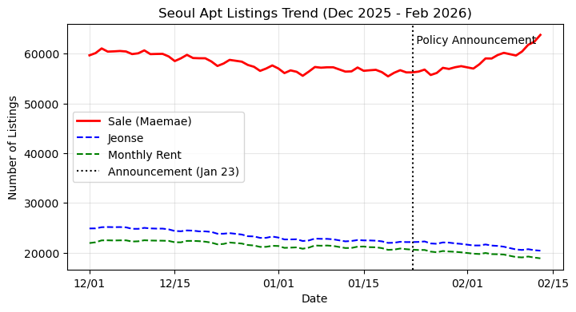

8장 서울 아파트 매물 변화 분석#
1. 데이터 입력#
일별 온라인집계 매물건수 : 매매+전세+월세
일자매매전세월세총매물수26/02/1363,745
20,422
18,891
103,058
26/02/1262,357
20,523
19,044
101,924
출처: 아실, 부동산 스터디, 매물 증감(서울 APT 일별, 2026.02.15일 기준)
Gemini 데이터세트 구축#
요청하신 서울 APT 일별 매물 추이 데이터셋을 생성하였습니다.
데이터는 입력된 텍스트에서 ‘일자’, ‘매매’, ‘전세’, ‘월세’, ‘총매물수’를 추출하여 정형화하였으며, 총 1,065개의 관측이 포함되어 있습니다. 아래 생성된 CSV 파일을 다운로드하여 활용하실 수 있습니다.
데이터 구조 예시#
일자 |
매매 |
전세 |
월세 |
총매물수 |
|---|---|---|---|---|
2023-02-01 |
52,236 |
52,914 |
29,627 |
134,777 |
2023-02-02 |
52,006 |
52,898 |
29,661 |
134,565 |
2023-02-03 |
52,878 |
53,420 |
29,874 |
136,172 |
… |
… |
… |
… |
… |
참고: 입력된 데이터의 형식상 일자와 매매 건수가 붙어있는 부분(예: 26/02/1363,745)을 자동으로 분리하여 2026-02-13과 63,745로 올바르게 처리하였습니다.
파일은 아래에 저장되었습니다.
seoul_apt_listings.csv
2. 질문 I#
정부가 다주택자 양도세 유예 연장 불가 방침을 공식화한 2026.1.23일 이후 서울 지역 아파트 매물에 변화가 감지되는가?
Gemini 분석#
네, 2026년 1월 23일 정부의 다주택자 양도세 중과 유예 연장 불가 방침 발표 이후, 서울 지역 아파트 매물에 뚜렷하고 즉각적인 변화가 감지됩니다.
특히 매매(Sale) 물량은 급증하고, 임대차(전세/월세) 물량은 감소하는 디커플링(Decoupling) 현상이 나타나고 있습니다. 이는 다주택자들이 양도세 중과를 피하기 위해 보유 중인 임대 물건을 매도 물건으로 전환하거나, 시장에 급하게 내놓고 있다는 강력한 방증으로 해석됩니다.
주요 변화 분석 (2026.1.23 ~ 2026.2.13)#
1. 매매 매물 급증 (Panic Selling 조짐)
1월 23일: 56,219건
2월 13일: 63,745건
변화: 불과 3주 만에 +7,526건 (+13.4%) 증가했습니다.
특이점: 1월 초부터 1월 23일까지는 매매 매물이 56,000~57,000건 사이에서 횡보하거나 소폭 감소하는 추세였으나, 발표 직후 상승 기울기가 가파르게 변했습니다.
2. 전세 및 월세 매물 감소 (임대 -> 매매 전환)
전세: 22,156건 → 20,422건 (-7.8% 감소)
월세: 20,628건 → 18,891건 (-8.4% 감소)
해석: 전세나 월세로 돌리던 물건들이 매매 시장으로 흡수되면서 임대차 시장의 공급은 오히려 줄어들고 있습니다.
시각적 분석#
아래 그래프는 2025년 12월부터 2026년 2월까지의 추이를 보여줍니다. 1월 23일(점선)을 기점으로 빨간색 실선(매매) 이 급격히 우상향하는 반면, 파란색/초록색 점선(전/월세) 은 우하향하는 것을 확인할 수 있습니다.

결론적으로: 정부의 발표는 시장에 즉각적인 영향을 미쳤으며, 다주택자들이 절세 매물을 쏟아내기 시작한 것으로 보입니다. 이러한 매물 출회(출현)가 실제 거래 가격 하락으로 이어질지는 지켜봐야 하겠으나, 단기적인 공급 충격은 이미 현실화되었습니다.
3. 질문 II#
계절적 요인은 없는지 분석해줘
Gemini 분석#
계절적 요인을 제거하고 정책의 순수 효과를 파악하기 위해, 최근 3년(2024~2026년) 동안 동일 기간(1월 23일 ~ 2월 13일)의 서울 아파트 매매 매물 변화 추이를 비교 분석했습니다.
분석 결과, 계절적 요인으로는 설명할 수 없는 이례적인 급등세가 2026년에 나타나고 있음이 확인되었습니다.

1. 연도별 비교 분석 (1.23 ~ 2.13 기간)#
연도 |
1월 23일 매물량 |
2월 13일 매물량 |
증감량 (변동률) |
비고 |
|---|---|---|---|---|
2024년 |
76,010건 |
73,536건 |
-2,474건 (-3.3%) |
통상적 계절성 (거래 증가로 매물 소진) |
2025년 |
89,020건 |
90,238건 |
+1,218건 (+1.4%) |
보합세 유지 (큰 변동 없음) |
2026년 |
56,219건 |
63,745건 |
+7,526건 (+13.4%) |
이례적 폭등 (정책 발표 직후) |
2. 계절성 vs 정책 효과#
통상적 패턴 (2024년): 1월~2월은 봄 이사철을 앞두고 거래가 활발해지면서 매물이 소진되어 감소(-3.3%) 하는 것이 일반적인 계절적 흐름입니다.
2026년의 특이성: 올해는 통상적인 흐름과 정반대로 매물이 폭발적으로 증가(+13.4%) 했습니다. 이는 단순히 계절이 바뀌어서 나타난 현상이 아니라, 정부의 양도세 중과 유예 연장 불가 방침이라는 외부 충격이 시장에 직접적인 트리거로 작용했음을 강력하게 시사합니다.
3. 결론#
2026년 1월 23일 이후의 매물 급증 현상은 계절적 요인이 아닌 정책적 요인에 의한 것으로 판단됩니다. 특히 2024년과 2025년의 동기간 데이터와 비교했을 때, 2026년의 기울기는 확연히 다른 양상을 보이고 있어, 다주택자들이 정부 발표를 심각한 매도 신호로 받아들이고 있음을 알 수 있습니다.
4. 질문 III#
매물 급증이 정책적 요인에 의한 것이라는 확신을 높이기 위해 추가적으로 살펴봐야할 실증 분석을 추천해줘
Gemini 분석#
매물 급증이 단순한 우연이나 다른 거시경제적 요인(금리, 경기 침체 등)이 아니라, ‘1.23 양도세 유예 연장 불가 방침’이라는 특정 정책에 기인했다는 인과관계를 더욱 견고하게 입증하기 위해 다음과 같은 실증 분석 방법론들을 제안합니다.
1. 이중차분법 (Difference-in-Differences, DiD) 분석#
가장 강력한 인과추론 도구입니다. 서울 전체가 아니라, ‘다주택자가 많이 보유했을 것으로 추정되는 집단(처치군)’ 과 ‘실거주 비율이 높은 집단(대조군)’ 을 나누어 매물 증가폭을 비교해야 합니다.
가설: 다주택자 비중이 높은 지역/단지일수록 1.23 이후 매물 증가율이 더 가파를 것이다.
분석 방법:
처치군 (Treatment Group): 갭투자 성지(노원, 도봉, 강북 등 ‘노도강’ 지역) 또는 전세가율이 높은 소형 평수 아파트.
대조군 (Control Group): 고가 1주택 실거주 위주 지역(강남, 서초 일부 대형 평수) 또는 토지거래허가구역(실거주 의무로 갭투자 불가).
확인 지표: 두 그룹의 매물 추세선이 1.23 이전에는 평행(Parallel trend)하다가, 1.23 이후 격차가 벌어지는지(Divergence) 확인.
2. 가격-매물량 상관관계 분석 (Granger Causality Test 변형)#
매물이 늘어난 성격을 규명하는 것입니다. 다주택자가 시간에 쫓겨 던지는 물량이라면 ‘호가(Asking Price)’ 의 하락이 동반되어야 합니다.
가설: 정책 충격으로 인한 패닉 셀링(Panic Selling)이라면, 매물량 증가는 시차를 두고 호가 하락을 선행(Granger cause)할 것이다.
분석 방법:
주간 단위 매물 건수와 주간 단위 호가 변동률의 시차 상관관계(Cross-correlation) 분석.
만약 매물은 급증하는데 호가가 버티고 있다면 ‘간보기 매물’이고, 호가가 뚝뚝 떨어진다면 ‘절세 급매물’로 해석 가능.
3. 단절적 시계열 분석 (Interrupted Time Series, ITS)#
현재 눈으로 확인한 꺾은선 그래프를 통계적으로 검증하는 방식입니다.
가설: 2026.1.23 시점을 기준으로 시계열의 ‘기울기(Slope)’ 와 ‘절편(Level)’ 이 통계적으로 유의미하게 변화했다.
분석 방법:
회귀식: \(Y_t = \beta_0 + \beta_1 T + \beta_2 D_t + \beta_3 (T \times D_t) + \epsilon_t\)
\(Y_t\): 매물 건수
\(T\): 시간 경과
\(D_t\): 정책 발표일 이후 더미 변수 (0 or 1)
\(T \times D_t\): 정책 발표 후 시간 경과 (기울기 변화 확인용)
\(\beta_3\) (기울기 변화 계수)가 양(+)의 방향으로 통계적으로 유의한지 검정(t-test).
4. 텍스트 마이닝을 통한 ‘급매’ 키워드 분석#
정량적 데이터(건수)의 한계를 보완하기 위해 비정형 데이터(매물 설명)를 분석합니다.
가설: 1.23 이후 등록된 매물의 설명(Description)에 ‘양도세’, ‘급매’, ‘절세’, ‘법인’, ‘주인직접’ 등의 키워드 빈도가 유의미하게 증가했을 것이다.
분석 방법:
네이버 부동산 등의 매물 상세 설명 텍스트 크롤링.
기간별(발표 전 vs 후) TF-IDF 분석을 통해 1.23 이후 새롭게 부상한 특징 단어 추출.
5. 거시 변수 통제 회귀분석 (Control Variables)#
매물 증가가 금리 인상이나 대출 규제 등 다른 요인 때문일 수 있다는 반박을 차단하기 위함입니다.
분석 방법:
매물 건수를 종속변수로 두고, 다음을 독립변수로 포함하여 다중회귀분석 수행.
\(X_1\): 시장 금리 (국고채 3년물 등)
\(X_2\): KOSPI 지수 (경기 심리 대리 변수)
\(X_3\): 계절 더미
\(X_4\): 정책 더미 (1.23 이후)
다른 변수(\(X_1, X_2, X_3\))를 통제한 상태에서도 \(X_4\)의 계수가 유의미하게 크다면 정책 효과가 입증됨.
참고: 파이썬 코드#
import pandas as pd
import matplotlib.pyplot as plt
import matplotlib.dates as mdates
# 데이터셋 불러오기
df = pd.read_csv('../Data/seoul_apt_listings.csv')
df['일자'] = pd.to_datetime(df['일자'])
# 분석 대상 기간 필터링 (2025년 12월 ~ 2026년 2월)
mask = (df['일자'] >= '2025-12-01')
df_recent = df.loc[mask].sort_values('일자')
# 주요 날짜 설정
announcement_date = pd.to_datetime('2026-01-23')
end_date = df_recent['일자'].max()
# 통계 산출
# 1. 발표 이전 추세 (1월 1일 ~ 1월 23일)
pre_period = df_recent[(df_recent['일자'] >= '2026-01-01') & (df_recent['일자'] <= announcement_date)]
post_period = df_recent[(df_recent['일자'] > announcement_date)]
# 특정 시점의 값 추출
val_jan23 = df_recent[df_recent['일자'] == announcement_date].iloc[0]
val_latest = df_recent.iloc[-1]
# 증가율 계산
sale_growth = (val_latest['매매'] - val_jan23['매매']) / val_jan23['매매'] * 100
jeonse_growth = (val_latest['전세'] - val_jan23['전세']) / val_jan23['전세'] * 100
monthly_growth = (val_latest['월세'] - val_jan23['월세']) / val_jan23['월세'] * 100
print(f"Jan 23 Sale: {val_jan23['매매']}, Latest Sale: {val_latest['매매']}, Growth: {sale_growth:.2f}%")
print(f"Jan 23 Jeonse: {val_jan23['전세']}, Latest Jeonse: {val_latest['전세']}, Growth: {jeonse_growth:.2f}%")
# 시각화
plt.figure(figsize=(8, 4))
plt.plot(df_recent['일자'], df_recent['매매'], label='Sale (Maemae)', color='red', linewidth=2)
plt.plot(df_recent['일자'], df_recent['전세'], label='Jeonse', color='blue', linestyle='--')
plt.plot(df_recent['일자'], df_recent['월세'], label='Monthly Rent', color='green', linestyle='--')
# 발표일 표시
plt.axvline(x=announcement_date, color='black', linestyle=':', label='Announcement (Jan 23)')
plt.text(announcement_date, df_recent['매매'].max(), ' Policy Announcement', verticalalignment='top')
plt.title('Seoul Apt Listings Trend (Dec 2025 - Feb 2026)')
plt.xlabel('Date')
plt.ylabel('Number of Listings')
plt.legend()
plt.grid(True, alpha=0.3)
plt.gca().xaxis.set_major_formatter(mdates.DateFormatter('%m/%d'))
plt.show()
Jan 23 Sale: 56219, Latest Sale: 63745, Growth: 13.39%
Jan 23 Jeonse: 22156, Latest Jeonse: 20422, Growth: -7.83%

import pandas as pd
import matplotlib.pyplot as plt
import matplotlib.dates as mdates
# 데이터셋 불러오기
df = pd.read_csv('../Data/seoul_apt_listings.csv')
df['일자'] = pd.to_datetime(df['일자'])
# 연도별 비교를 위한 분석 기간 설정 (1월 23일 ~ 2월 13일)
# 2024년, 2025년, 2026년을 비교
target_years = [2024, 2025, 2026]
period_start_md = '01-23'
period_end_md = '02-13'
comparison_data = []
plt.figure(figsize=(8, 4))
colors = {2024: 'gray', 2025: 'silver', 2026: 'red'}
labels = {2024: '2024 (Normal Year)', 2025: '2025 (Normal Year)', 2026: '2026 (Policy Effect)'}
styles = {2024: '--', 2025: '--', 2026: '-'}
for year in target_years:
start_date = pd.to_datetime(f'{year}-{period_start_md}')
end_date = pd.to_datetime(f'{year}-{period_end_md}')
# 해당 연도의 기간에 해당하는 데이터 필터링
mask = (df['일자'] >= start_date) & (df['일자'] <= end_date)
period_df = df.loc[mask].sort_values('일자').reset_index(drop=True)
if not period_df.empty:
# 해당 연도 1월 23일 기준 변동률(%) 계산
base_value = period_df.iloc[0]['매매']
period_df['change_rate'] = (period_df['매매'] - base_value) / base_value * 100
# 매물 증감 수치 계산
start_listings = period_df.iloc[0]['매매']
end_listings = period_df.iloc[-1]['매매']
delta = end_listings - start_listings
pct_change = (delta / start_listings) * 100
comparison_data.append({
'Year': year,
'Start_Listings': start_listings,
'End_Listings': end_listings,
'Change_Abs': delta,
'Change_Pct': pct_change
})
# 그래프 그리기
# 공통 X축 생성 (1월 23일 경과 일수 기준)
days_passed = (period_df['일자'] - start_date).dt.days
plt.plot(days_passed, period_df['change_rate'],
label=labels[year], color=colors[year], linestyle=styles[year], linewidth=2.5 if year==2026 else 1.5)
plt.title('Comparison of Listing Inventory Changes (Jan 23 - Feb 13)')
plt.xlabel('Days after Jan 23')
plt.ylabel('Cumulative Change Rate (%)')
plt.axhline(0, color='black', linewidth=0.8)
plt.legend()
plt.grid(True, alpha=0.3)
# 종료 지점에 수치 레이블 추가
for year in target_years:
row = next(item for item in comparison_data if item["Year"] == year)
plt.text(21, row['Change_Pct'], f"{year}: {row['Change_Pct']:.1f}%", verticalalignment='center')
plt.show()
# 비교 표 출력
comp_df = pd.DataFrame(comparison_data)
print(comp_df)

Year Start_Listings End_Listings Change_Abs Change_Pct
0 2024 76010 73536 -2474 -3.254835
1 2025 89020 90238 1218 1.368232
2 2026 56219 63745 7526 13.386933